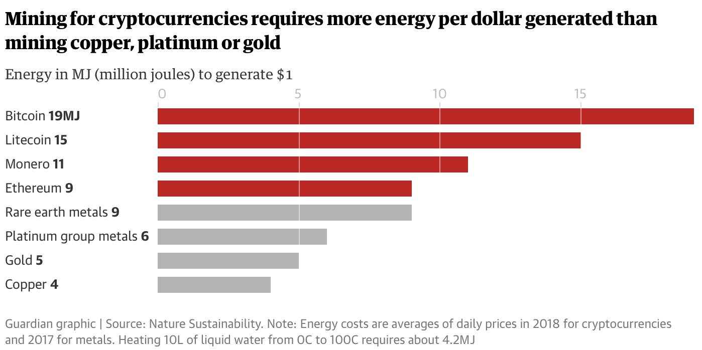
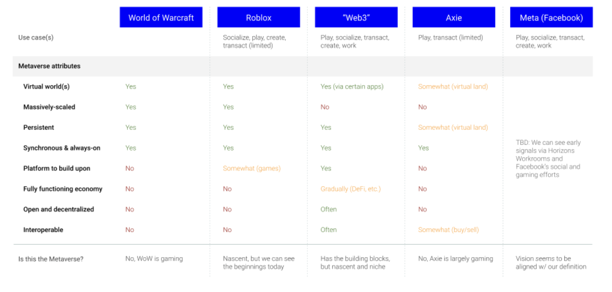
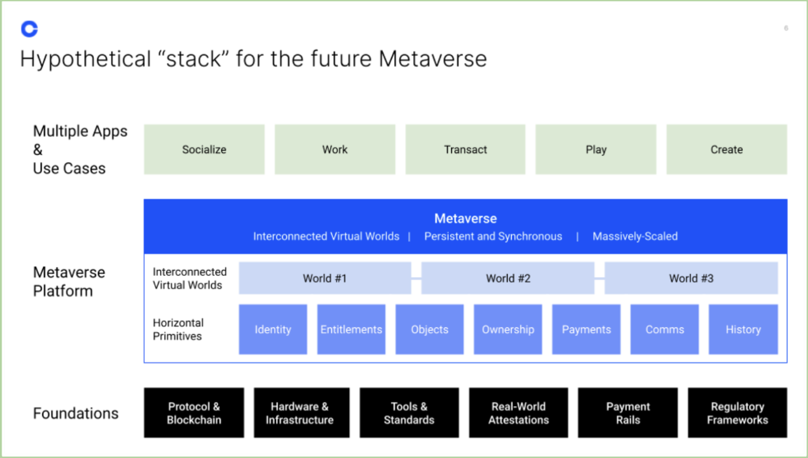

Cryptocurrencies run on a technology called a Blockchain, a publicy available, decentralized ledger.
Blockchain in summary, is a big database that records transaction. It's maintained by everyone who uses the network,
which can't ben tampered with due to it's security and cryptographic links. One of the most popular applications of
this technology happens to be cryptocurrency.
However, if you would like to learn more about blockchain technology, visit the blockchain
section of our platform.
What is Cryptocurrency Mining?
Billions of dollars' worth transactions take place on cryptocurrency networks, such as Ethereum, Bitcoin, Litecoin, and more each day.
These transactions are grouped together and rolled into, "blocks", which get appended to a chain of blocks that go all
the way back to the Genesis block (the first transaction ever made).
Although blockchains may seem like automatic processes that runs on it's own, there are still some manual configurations that are being made.
One of the most common ones include Mining. People that run complex softwares (which are called miners) race to validate the transactions
that occur on the chain by completing complex algorithmic puzzles. These complex algorithmic puzzles are almost impossible to solve by hand, and takes immense
energy from the computer to solve, which is why blockchain is super secure in the first place.
However, if users do find away to solve the puzzle, they get rewarded of minted coins, that miners can keep to trade for some fiat value.
It should be noted though, although it's a complex and resource-heavy process, it's a big business. According to Digiconomist.com,
Bitcoin mining alone generates almost an astonishing amount of $6 billion a year.
There have been many successful cases of users finding a solution to such algorithmic puzzles, which have inspired more people to follow suit and buy
gaming-intensive graphics cards to start running mining processes on their machines. However, the more miners present, the more computationally intensive
the mining process on the network gets. This in turn can only be handled by powerful mining computers, which take a lot of energy.
For example, we can study Bitcoin's mining consumption is comparable to the power consumption of Austria as a whole.
How is this possible you may ask? Bitcoin mining in context requires twice the energy than mining the same value of copper, gold, or platnium.
More specifically, one dollar's worth of bitcoin takes about 19 megajoules of energy to mine, compared to 4 or 5, and 6 megajoules
for copper gold, and platnium.
Other cryptocurrencies also do fairly poor in comparision. According to Nature Sustainability, a cost-per-dollar for Ethereum only takes 9 megajoules and 14 megajoules for the
privacy focused cryptocurrency.
 In November 2017, it was estimated that the power consumption of the network
is equivalent to that of the nation of Ireland. Another estimate was equivalent to the
annual carbon emissions as one million TransAtlantic flights.
According to Guardian, any cryptocurrency mined in China would generate
four times the amount of CO2 compared to the amount generated in Canada.
Legality of Crypto
Cryptocurrencies are legal in most places, but regulators are having
difficulties tracking crypto activity. For example, the United States'
Securities and Exchange Commission has repeatedly said Bitcoin - and other
cryptocurrencies are not securities.
However, something to pay attention to is the laws around exchange apps
(large platforms where you can buy and sell digital currencies, such as Crypto.com or Coinbase).
This is due to 99% of cryptocurrency trading happening on exchange apps, and most people
withdraw money to fiat values right through the platform itself.
Along with exchange apps, cryptocurrencies themselves also struggle with nation-state laws.
For instance, Binance, a major crypto-exchange for the world, based in Malta, lists around
550 coins all trying to become bigger than Bitcoin, however, American Output only lists 31 coins out
out of the 550. This is the reason why there is a Binance and Binance.usd.
The Cryptocurrency Market Explained
On CoinMarketCap, there are approximately more than 2400 coins on the market
right now. 900 coins currently trade more than $1 million a day.
The reason why people buy these cryptocurrencies in the first place is primairly
because they believe in the market. Most of these tokens aren't actually backed by
fiat-currencies. However, if people believe they're worth something, then, they are.
In other words, when users trade on exchange apps, there are no refunds, or strategy.
It's all about taking risks.
The Rule of Consensus in Cryptocurrency
Proof of Work is a method of verifying transactions on a blockchain in
which an algorithm provides a mathematical problem that computers race to solve.
Each participating computer often referred to as a "miner" as mentioned before, solves
a mathematical puzzle that helps verify a group of transactions - referred to as a block,
then adds them to the blockchain ledger.
This process requires intense amounts of computational power and electricity.
Miners barely break even with cryptocurrency due to power and computing resource
prices.
Proof of Stake is an alternative method to reduce the amount of power
necessary to check transactions. With this method, the number of transactions each person
can verify is limited by the amount of cryptocurrency they're willing to "stake", or temporarily
lock up in a communal safe, for the chance to participate in the process.
It's almost like a bank collateral. Each person who stakes crypto is eligible
to verify transactions, but the odds you'll be chosen to do so increase with the
amount you place. According to Anton Altement, CEO of Osom Finance, because proof
of stake removes energy-intensive equation methods, it's more efficient, allowing for
faster verification/confirmation times for transactions.
If a stake owner (sometimes called a validator) is chosen to validate a new
group of transactions, they'll be rewarded with crypto in the amount of
transaction fees.
Both poof of stake and proof of work rely on consensus mechanism to verify
transactions. This means while each use individual users to verify transactions, each
verified transaction must be checked and approved by the majority of ledger holders.
This can be seen as an example of low autonomy organization. A hacker couldn't alter the blockchain
ledger unless they successfully got at least 51% of ledgers to match their copy as mentioned before - Visit
the blockchain section of your platform to learn more about hackers.
Pros and Cons of Cryptocurrency Investing
The benefits of cryptocurrency include the relative ease of entry into the market, the fact that
you can but and sell online, and trade anonymously. As you may already know, cryptocurrencies are incredibly
volatile, and because the market is based on hype and sepculation, it's very difficult to work out how things
will work our in the future.
Most cryptocurrencies are not backed by fiat currencies, and lots of so-called
"stable coins", which claim to be pegged to the US dollar, are not because there's
no standard definition of what a stable coin actually is.
Additionally, in it's current state, the cryptocurrency market is largely unregulated and still finding
its feet. One report, presented to the SEC in March 2021, show that 95% of cryptocurrency trading volume
reported by exchanges was faked; exchanges commonly sold coins and bought themselves back.
A lack of regulation can hurt investors as well. In one instance, the owner of what was Canada's biggest currency
exchange, QuadrigaCX, died-taking the keys to the funds with him - meaning that up to $190 million of investors' money
was stuck in exchanges.
It should be mentioned though that regulators are starting to make progress. Exchanges like Binance and Coinbase
are working with regulators, such as the CFTC, the SEC, and the NYDFS, to regulate the market.
Applications of Cryptocurrency
Decentralized Autonomous Organizations
The DAO is an organization that is designed to be automated and decentralized.
It acts as a form of venture capital fund, based on open-source code and without a
typical management structure or board of directors. Developers of DAO believe they
could eliminate human error or manipulation of investor funds by placing decision-rights
through all members of the organization.
The backbone of a DAO is its smart contract. The contract defines the laws of
the organization and holds the group's treasury. Once the contract is live on
Ethereum, no one can chage the rules except by a vote. If anyone tries to do
something that's not covered by the rules and logic in the code, it will fail.
Moreover, because the treasury is defined by the smart contract too, no one can spend
money without the group's approval either.
Metaverse
Metaverse in the most simplest words, let's users create, buy, and sell goods on
simulated realities. For example, a world of idealistic visions of the metaverse include allowing
you to take virtual items like clothes or cars, and try them out from one platform to another in an artifical platform.

Image by Coinbase
The promise of the metaverse is to allow a greater overlap of our digital
and physical lives in wealth, socialization, productivity, shopping, and entertainment. However,
the metaverse not only supports cryptocurrencies and transactions, but also re-defines the way people work.
No doubt, Covid-19 has already been the biggest test for the corporate world, shifting work
and employees to remote collaboration. However, cryptocurrencies is also making companies transfer
their processes to remote forcing peopple to merge their real and virtual personas.

Image by Coinbase
Non-Fungible Tokens (NFTs)
NFTs may seem useless to average person because in reality, they are just
digital pictures or videos that anyone can screenshot for free. Though, the value
of NFTs does not just come from the picture, but their purpose. NFTs can secure digital content, provide
provenance, and encode conditional transactions all embedded in blockchain. This embedded nature
imbues NFTs with the immutability of blockchain: at a high level, each entry is cryptographically linked and
collected in nodes.
Immutable Provenance: NFTs are immutable beacuse of blockchain's cryptographic linking
properties, and have provenance in that the transaction that creates the NFT and all subsequent transactions related to
it are all in a linked list and discoverable by anyone with access to the blockchain.
True Content Ownership: an NFT held by a single wallet can only be owned by that user until traded to another
user at their discretion.
Conditional Rules that Ensure Fair Compensation: NFTs allow one to program conditions that, for example,
can provide for a percent of secondary sales to flow to named producers and to distributors, covering costs and providing some amount
of protection against third-party arbitrage that undercut primary sales.
Creator Economy: The creator economy emerged with influencers, but they have been highly dependent on the policies and
algorithms remaining consistent on the 2.0 platforms used to build their influenced network.
In 2020, the revenue from all NFT marketplaces (OpenSea, rarible, and etc) for the entire year was
$250 million. As of October 24th, 2021, more than 470,000 unique blockchain wallet addresses transacted
in the last 30 days on the top five marketplaces.
The reason why NFTs have so much hype is beacuse they can establish a real value for digital content by creating
and enforcing true scarcity. NFTs can identify the source of the digital asset, create a finite number of replicas, and uniquely track
each replica. Any app can see that creation data and confirm the finite number of replicas created by referencing the transaction
that recorded their creation of a blockchain network.
NFTs also solves the Secondary Sales dilemma, where in third-party sellers have
been able to capitalize on seeling products and content at the expense of the original content creators.
To summarize, NFTs essentially bridge content domains with crypto markets, creating the foundation for a robust creator economy!